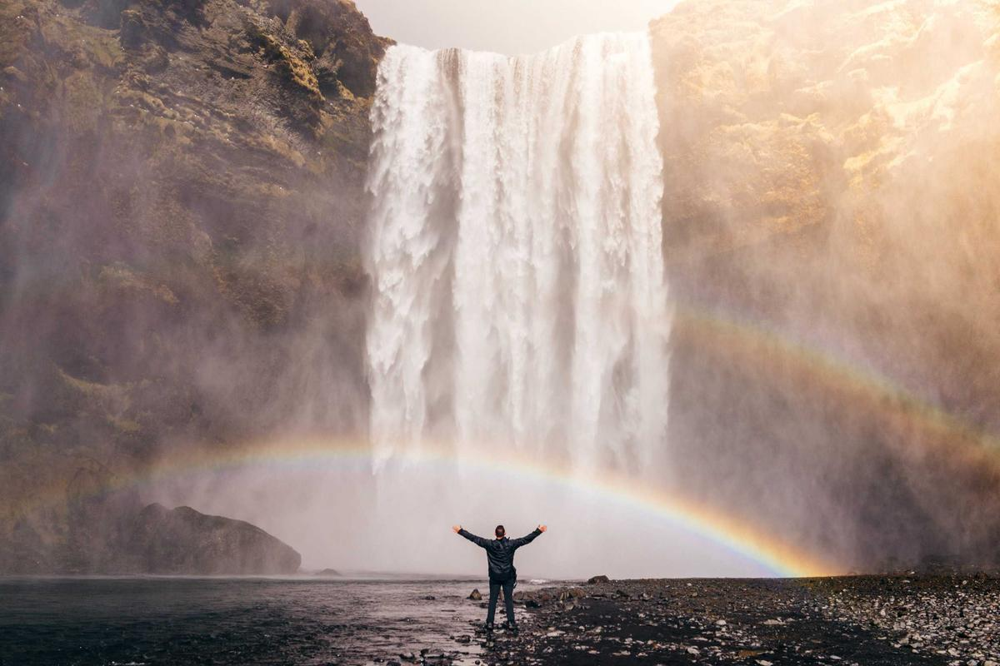

Nocturne Cities A
Skyline notturno con volumi luminosi e atmosfera urbana.
6 immagini in composizione editoriale con titolo e mini descrizione.

Skyline notturno con volumi luminosi e atmosfera urbana.

Composizione geometrica con contrasti netti e visuale profonda.

Superfici ibride tra materia organica e forme sintetiche.

Ritratto sperimentale con luce controllata e texture fluide.

Frame cinematico ispirato a scenari rétro-futuri.

Taglio narrativo minimale con focus su atmosfera e distanza.